pacman::p_load(sf, spatstat, sparr, terra, tmap, tidyverse, knitr)Take-home Exercise 1
Where and When Pulang Pisau Burned in 2026
Forest and land fires, Pulang Pisau regency, Central Kalimantan, 1 Jul to 22 Sep 2026 NASA FIRMS MODIS and VIIRS, GADM 4.1, OpenStreetMap pacman sf spatstat sparr terra tmap tidyverse knitr
Fire-days
3,065
A 1 km square burning 3 days counts as 3
In September
82%
of fire-days fell in September
Near-repeats
1.33×
close fire pairs, compared with chance
New fires found
76%
of new fires fell near recent fires
In short. Very little burned until late August. Fire-days then rose to a peak in the last week of the record, with the densest burning in the south-central peat. Fires that were close in space were also close in time. Fires under 3 km apart happened 1 to 3 days apart more often than random dates give, and a daily patrol zone built on this found more new fires than a hotspot map of the same size.
The task is set out in the Take-home Exercise 1 brief. The executive summary slides are here.
TipThree terms used throughout
- Fire-day, or event. One 1 km square seen burning on one day.
- Intensity. Expected fire-days per km², shown like a heat map.
- Null model. What the pattern would look like by chance. Every clustering result is judged against one.
Introduction
On 17 September 2026, PM2.5 in Pulang Pisau reached 595 µg/m³, about forty times the WHO 24-hour guideline (Berita Sampit, 2026; WHO, 2021). Officials had counted 3,693.7 hectares burned, and the regency was in emergency response.
2026 was a dry El Niño year, and on 11 September Central Kalimantan had more high-confidence hotspots than any other province (IQAir, 2026).
Much of Pulang Pisau is deep peat inside the failed Mega Rice Project, drained by canals dug in the 1990s. It has burned badly in many dry years since (Page et al., 2002; Page and Hooijer, 2016).
Any fire map looks clustered, because fires need dry fuel and dry fuel is uneven. This report therefore looks at where and when fires were most common, and whether fires were closer together in space and time than uneven fuel explains. The first helps decide where to base crews. The second shows whether crews should also check around each new fire.
Research Questions
The study asks six questions. Q1 answers Task 2, Q2 to Q4 answer Task 3, and Q5 and Q6 are the bonus analysis.
| # | Question | Task | Main method |
|---|---|---|---|
| Q1 | Where and when was fire intensity highest in 2026? | Task 2 | Kernel density, spatio-temporal kernel density |
| Q2 | Are fires more clustered than complete spatial randomness? | Task 3 | L function with simulation envelopes |
| Q3 | Do fires still cluster once the uneven intensity is allowed for? | Task 3 | Inhomogeneous L function |
| Q4 | Are fires that are close in space also close in time, beyond each area’s own fire season? | Task 3 | Knox style test with random time labels |
| Q5 | Does access by canal and road explain where fires burn? | Bonus | rhohat(), Poisson point process model, inhomogeneous L |
| Q6 | Do recent fires predict new ones better than a hotspot map? | Bonus | Back-test of a rolling watch zone against a static hotspot zone |
Task 1. Data Preparation
Loading the Packages
p_load() of pacman loads the packages below and installs any that are missing. The workflow builds on the course text (Kam, 2026).
| Package | Job in this report |
|---|---|
| sf | Reads, cleans and reprojects the boundary, fire points and OSM lines |
| spatstat | Point pattern objects, kernel density, L functions, envelopes, point process models |
| sparr | Spatio-temporal kernel density and its bandwidths |
| terra | Turns spatstat density surfaces into rasters tmap can draw |
| tmap | All maps |
| tidyverse | Reading, filtering, counting and the non-map charts |
| knitr | Tables |
shared colours
col_fire <- "#D55E00" # vermilion, fire events
col_accent <- "#0072B2" # blue, reference lines and null models
col_band <- "#E69F00" # orange, envelopes and highlights
col_land <- "#F7F4EC" # paper tone for land
set.seed(2026)Data Acquisition
| Dataset | Source and access | Coverage used | Notes |
|---|---|---|---|
| MODIS Collection 6.1 active fires | NASA FIRMS area API, accessed 23 Sep 2026 | Kalimantan bounding box, 1 Jan to 22 Sep 2026 | 1 km pixels, Terra and Aqua. Standard processing to 30 Jun, near real time after |
| VIIRS S-NPP 375 m active fires | NASA FIRMS area API, accessed 23 Sep 2026 | Same | 375 m pixels (Schroeder et al., 2014). No detections at all from 28 April to 2 June or from 11 to 16 July, so used only as a sensitivity check |
| GADM 4.1 level 2 boundaries | gadm.org, downloaded 10 Sep 2026 for Hands-on Exercise 3 | Indonesia, regency level | Used in place of the Indonesia Geospasial portal file, which failed to download |
| OpenStreetMap | Geofabrik Kalimantan extract, accessed 23 Sep 2026 | Waterways and roads | Used for the value-added analysis |
The FIRMS data was downloaded with a short Python script through the FIRMS area API, five days at a time, for a box covering Kalimantan. It uses standard processing (SP) data up to 30 June and near real time (NRT) data after that.
To run it again, use python3 get_firms.py YOUR_MAP_KEY in data/rawdata/firms/ with a free FIRMS map key. It was run on 23 September 2026.
Show the download script, get_firms.py
"""Download FIRMS 2026 fire detections for Kalimantan through the FIRMS area API.
Usage python3 get_firms.py YOUR_MAP_KEY
Uses standard processing (SP) data where it exists and near real time (NRT) after that.
Writes one csv per sensor into the folder this script sits in.
"""
import csv, io, sys, time, pathlib, urllib.request, datetime as dt
KEY = sys.argv[1]
OUT = pathlib.Path(__file__).resolve().parent
BBOX = "108.5,-4.3,119.3,4.5" # west,south,east,north, all of Kalimantan
START = dt.date(2026, 1, 1)
END = dt.date.today() - dt.timedelta(days=1)
BASE = "https://firms.modaps.eosdis.nasa.gov/api"
SENSORS = {"viirs_snpp": ("VIIRS_SNPP_SP", "VIIRS_SNPP_NRT"),
"modis": ("MODIS_SP", "MODIS_NRT")}
def get(url):
for attempt in range(4):
try:
with urllib.request.urlopen(url, timeout=180) as r:
return r.read().decode()
except Exception as e:
print(" retry after error:", e)
time.sleep(5 * (attempt + 1))
sys.exit("Gave up on " + url.replace(KEY, "KEY"))
text = get(f"{BASE}/data_availability/csv/{KEY}/ALL")
if not text.startswith("data_id"):
sys.exit("FIRMS said: " + text[:300])
(OUT / "data_availability.csv").write_text(text)
avail = {r["data_id"]: r for r in csv.DictReader(io.StringIO(text))}
for name, (sp, nrt) in SENSORS.items():
sp_max = dt.date.fromisoformat(avail[sp]["max_date"])
print(f"\n{name} SP available to {sp_max}, NRT from {avail[nrt]['min_date']}")
cols, rows, d = [], [], START
while d <= END:
src = sp if d <= sp_max else nrt
last = min(d + dt.timedelta(days=4), END, sp_max if src == sp else END)
n = (last - d).days + 1
body = get(f"{BASE}/area/csv/{KEY}/{src}/{BBOX}/{n}/{d}")
if body.strip() and not body.startswith("latitude"):
sys.exit(f"FIRMS said on {d}: " + body[:300])
got = list(csv.DictReader(io.StringIO(body)))
for r in got:
r["source"] = src
cols += [k for k in r if k not in cols] # SP and NRT columns differ slightly
rows += got
print(f" {d} to {last} {src:15s} {len(got):6d} rows")
d = last + dt.timedelta(days=1)
time.sleep(0.5)
f = OUT / f"{name}_2026_kalimantan.csv"
with open(f, "w", newline="") as fh:
w = csv.DictWriter(fh, fieldnames=cols, restval="")
w.writeheader()
w.writerows(rows)
print(f" saved {len(rows)} rows to {f.name}")
CautionTwo data versions in one year
SP data ends on 30 June, and the NRT data after it is provisional. NRT data also has no type flag, so fixed heat sources cannot be filtered out. Two further checks, under Merging Repeated Detections, looks for them instead.
Study Design
Point Event Definition
A point event, or fire-day, is one 1 km cell with fire on one local day. Three facts about MODIS led to this.
- MODIS sees each place up to four times a day, so one fire can be recorded four times.
- Each detection is the centre of a pixel about 1 km wide, so distances under 1 km are not reliable.
- FIRMS dates are in UTC. An Aqua night pass at 19:30 UTC is 02:30 the next day in Pulang Pisau (UTC+7).
So detections were converted to local time, placed on a 1 km grid and merged within each cell and day, keeping the most confident one.
Spatial Study Window
Pulang Pisau regency, using its GADM boundary, was chosen for three reasons.
- It had the densest MODIS detections of any regency in Kalimantan in 2026 (Figure 2, Table 1).
- At 9,740 km² it holds thousands of events but is small enough for the simulations to run in minutes.
- Fire response and emergency status are decided at regency level.
The boundary cuts through peat, so fires just outside can affect fires inside. Edge corrections deal with this.
Temporal Study Window
Only one cleaned event fell before July, so the analysis covers 1 July to 22 September 2026 (84 days), with the day as the time unit.
Coordinate Reference System
All analysis uses UTM zone 49S (EPSG 32749). The eastern edge of the regency is just inside zone 50, but the distance error there is only about 0.13 percent, far smaller than a 1 km pixel. Distances are in kilometres.
Analytical Assumptions and Choices
The main choices are listed below and explained where they are used.
| Decision | Choice | Why | Risk |
|---|---|---|---|
| Coordinates | UTM zone 49S, in km | Distances in km, same datum as FIRMS | Error of about 0.13 percent at the east edge |
| Event | One 1 km cell with fire on one local day | Merges repeat passes | One fire on a cell border can become two events |
| Time | Local day, UTC+7, 1 Jul to 22 Sep 2026 | Matches daily fire management | Fires after 22 September are missed |
| KDE bandwidth | Scott, 7.5 km, plus 2 km and adaptive | Selectors under 1 km trace the pixel grid | Peak values change with bandwidth |
| STKDE bandwidths | Oversmoothing, 8.1 km and 2.6 days | Avoids false small hot spots | Short-lived hot spots are smoothed away |
| Distance range | 1 to 15 km | Under 1 km is unreliable | Other distances are not tested |
| Edge correction | Border | Standard for large patterns | Loses points near the edge |
| Envelopes | Global, 99 simulations, nrank = 5 |
One 5 percent test for all distances | More cautious than pointwise envelopes |
| Q3 null model | Inhomogeneous Poisson from the KDE | Removes clustering caused by uneven density | Result changes with sigma, see Robustness Checks |
| Q4 null model | Dates shuffled, then shuffled within 10 km blocks | Keeps locations and each block’s timing | Block size is a judgement call |
| Q4 main test | Pairs under 3 km and 1 to 3 days apart | A range a patrol can cover | Chosen after seeing the grid |
| Q6 target | Cells with no fire in the past 7 days | What a patrol wants to find | Spread to the next cell counts as new |
Data Wrangling and Quality Assessment
Importing the Boundaries
st_read() reads the GADM file, and Pulang Pisau is taken out as the study window.
read GADM level 2
idn_adm2 <- st_read("data/rawdata/gadm/gadm41_IDN_2.json", quiet = TRUE)
kalimantan <- idn_adm2 %>%
filter(str_detect(NAME_1, "^Kalimantan")) %>%
st_transform(32749)
pp_sf <- kalimantan %>% filter(NAME_2 == "PulangPisau")
kalimantan %>% st_drop_geometry() %>% count(NAME_1, name = "units") %>% kable()| NAME_1 | units |
|---|---|
| KalimantanBarat | 14 |
| KalimantanSelatan | 13 |
| KalimantanTengah | 14 |
| KalimantanTimur | 9 |
| KalimantanUtara | 5 |
GADM writes names without spaces, so the filter uses "PulangPisau". GADM is also slightly out of date. It shows 55 Kalimantan units instead of 56, because Mahakam Ulu, created in 2013, is missing.
check the study window
tibble(
valid = st_is_valid(pp_sf),
geometry = as.character(st_geometry_type(pp_sf)),
parts = length(st_cast(st_geometry(pp_sf), "POLYGON")),
area_km2 = round(as.numeric(st_area(pp_sf)) / 1e6, 1)
) %>% kable()| valid | geometry | parts | area_km2 |
|---|---|---|---|
| TRUE | MULTIPOLYGON | 1 | 9740.1 |
The boundary is valid, is a single polygon and covers 9,740.1 km².
Importing the Fire Detections
read_csv() of readr reads the MODIS file the download script wrote. glimpse() shows the columns.
read MODIS
modis_raw <- read_csv("data/rawdata/firms/modis_2026_kalimantan.csv")
glimpse(modis_raw)Rows: 50,877
Columns: 16
$ latitude <dbl> 3.2739, -1.8960, 2.2222, -1.8967, -1.8954, -0.5221, -0.4164…
$ longitude <dbl> 113.0659, 115.8665, 117.8363, 115.8670, 115.8581, 116.1431,…
$ brightness <dbl> 311.0, 309.4, 312.0, 315.2, 305.0, 335.6, 316.8, 310.8, 304…
$ scan <dbl> 1.3, 1.1, 1.5, 1.0, 1.0, 1.2, 1.1, 1.0, 1.0, 1.0, 1.0, 1.0,…
$ track <dbl> 1.1, 1.0, 1.2, 1.0, 1.0, 1.1, 1.0, 1.0, 1.0, 1.0, 1.0, 1.0,…
$ acq_date <date> 2026-01-03, 2026-01-08, 2026-01-10, 2026-01-13, 2026-01-13…
$ acq_time <dbl> 121, 718, 657, 122, 122, 713, 713, 713, 714, 751, 752, 752,…
$ satellite <chr> "Terra", "Aqua", "Aqua", "Terra", "Terra", "Aqua", "Aqua", …
$ instrument <chr> "MODIS", "MODIS", "MODIS", "MODIS", "MODIS", "MODIS", "MODI…
$ confidence <dbl> 0, 63, 66, 74, 40, 88, 72, 62, 52, 0, 40, 45, 76, 68, 55, 3…
$ version <chr> "61.03", "61.03", "61.03", "61.03", "61.03", "61.03", "61.0…
$ bright_t31 <dbl> 276.9, 283.6, 293.5, 283.6, 283.9, 294.3, 293.8, 291.2, 279…
$ frp <dbl> 14.1, 8.5, 10.6, 11.3, 4.0, 39.3, 10.5, 5.8, 6.1, 21.9, 7.1…
$ daynight <chr> "D", "D", "D", "D", "D", "D", "D", "D", "D", "D", "D", "D",…
$ type <dbl> 2, 2, 0, 2, 2, 0, 0, 0, 0, 0, 0, 0, 0, 0, 0, 0, 0, 2, 2, 0,…
$ source <chr> "MODIS_SP", "MODIS_SP", "MODIS_SP", "MODIS_SP", "MODIS_SP",…Inspecting Quality
The raw file is first checked for the problems listed in the brief.
quality checks on the raw file
tibble(
check = c("rows", "missing coordinates", "coordinates out of range",
"exact duplicate rows", "dates outside 2026",
"SP rows", "NRT rows", "rows with no type flag"),
value = c(nrow(modis_raw),
sum(is.na(modis_raw$latitude) | is.na(modis_raw$longitude)),
sum(abs(modis_raw$latitude) > 90 | abs(modis_raw$longitude) > 180, na.rm = TRUE),
sum(duplicated(modis_raw)),
sum(year(modis_raw$acq_date) != 2026),
sum(modis_raw$source == "MODIS_SP"),
sum(modis_raw$source == "MODIS_NRT"),
sum(is.na(modis_raw$type)))
) %>% kable()| check | value |
|---|---|
| rows | 50877 |
| missing coordinates | 0 |
| coordinates out of range | 0 |
| exact duplicate rows | 0 |
| dates outside 2026 | 0 |
| SP rows | 2371 |
| NRT rows | 48506 |
| rows with no type flag | 48506 |
There are no missing coordinates, impossible values or duplicate rows. The real problems are the missing type flag in NRT data, repeat detections, UTC dates and low-confidence detections.
Deriving Local Time
ymd_hm() of lubridate builds a UTC timestamp from acq_date and acq_time. with_tz() moves it to Asia/Jakarta, which is UTC+7.
UTC to local time
modis <- modis_raw %>%
mutate(t_utc = ymd_hm(paste(acq_date, sprintf("%04d", acq_time)), tz = "UTC"),
t_local = with_tz(t_utc, "Asia/Jakarta"),
date_local = as_date(t_local))
modis %>%
filter(date_local != acq_date) %>%
count(satellite, daynight, name = "rows_shifted") %>%
kable()| satellite | daynight | rows_shifted |
|---|---|---|
| Aqua | N | 6026 |
6,026 detections change date, and every one is an Aqua night pass.
ImportantWhy the time fix matters
Without this fix, every Aqua night detection would be one day early. A space-time test would then see pairs of fires one day apart that were really on the same night.
Spatial and Confidence Filtering
st_as_sf() turns the table into points in WGS 84. st_transform() converts them to UTM 49S, and st_filter() keeps only the points inside Pulang Pisau.
FIRMS treats confidence under 30 as low, with more false alarms from sun glint or hot bare ground (Giglio et al., 2016). These detections are removed.
clip to Pulang Pisau and drop low confidence
modis_sf <- modis %>%
st_as_sf(coords = c("longitude", "latitude"), crs = 4326, remove = FALSE) %>%
st_transform(32749)
pp_det <- st_filter(modis_sf, pp_sf)
pp_conf <- pp_det %>% filter(confidence >= 30)Exploring the Raw Detections
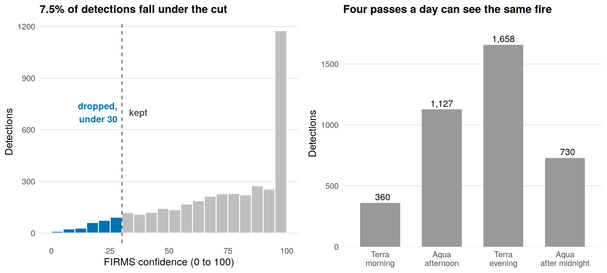
p_conf <- ggplot(eda_conf, aes(confidence, fill = kept)) +
geom_histogram(binwidth = 5, boundary = 0, closed = "left", colour = "white") +
geom_vline(xintercept = 30, linetype = "dashed", colour = "grey30") +
annotate("text", x = 28, y = 700, label = "dropped,\nunder 30", hjust = 1,
colour = col_accent, size = 3.8, fontface = "bold") +
annotate("text", x = 33, y = 700, label = "kept", hjust = 0,
colour = "grey35", size = 3.8, fontface = "bold") +
scale_fill_manual(values = c("kept, 30 or above" = "grey75", "dropped, under 30" = col_accent),
guide = "none") +
labs(title = paste0(share_low, "% of detections fall under the cut"),
x = "FIRMS confidence (0 to 100)", y = "Detections") +
theme_minimal(base_size = 12) +
theme(plot.title = element_text(face = "bold", size = 13),
panel.grid.minor = element_blank(), panel.grid.major.x = element_blank())
p_pass <- ggplot(eda_pass, aes(pass, n)) +
geom_col(fill = "grey60", width = 0.65) +
geom_text(aes(label = format(n, big.mark = ",")), vjust = -0.4, size = 3.8) +
scale_y_continuous(expand = expansion(mult = c(0, 0.12))) +
labs(title = "Four passes a day can see the same fire",
x = NULL, y = "Detections") +
theme_minimal(base_size = 12) +
theme(plot.title = element_text(face = "bold", size = 13),
panel.grid.major.x = element_blank(), panel.grid.minor = element_blank())
grid::grid.newpage()
grid::pushViewport(grid::viewport(layout = grid::grid.layout(1, 2)))
print(p_conf, vp = grid::viewport(layout.pos.row = 1, layout.pos.col = 1))
print(p_pass, vp = grid::viewport(layout.pos.row = 1, layout.pos.col = 2))Only 7.5 percent of detections are under the confidence cut of 30.
All four daily passes see fires, even the one after midnight (730 detections), so one fire can be counted up to four times. This is why repeat detections are merged next. Cloud and smoke change between passes, so the counts do not show when fires burn.
Merging Repeated Detections
Each point gets a 1 km grid cell, and slice_max() keeps the most confident detection per cell and day.
one event per 1 km cell per day
xy <- st_coordinates(pp_conf)
fires_all <- pp_conf %>%
mutate(cell = paste(floor(xy[, 1] / 1000), floor(xy[, 2] / 1000))) %>%
group_by(cell, date_local) %>%
mutate(n_det = n()) %>%
slice_max(confidence, n = 1, with_ties = FALSE) %>%
ungroup()
fires_all %>% st_drop_geometry() %>% count(n_det, name = "cell_days") %>% kable()| n_det | cell_days |
|---|---|
| 1 | 2601 |
| 2 | 414 |
| 3 | 48 |
| 4 | 3 |
Several hundred cell-days had two to four detections, which were the same fire seen on different passes.
Two further checks
The last checks look for fixed heat sources, which would burn on most days, and for wide pixels, using the scan column.
static sources and pixel size
days_per_cell <- fires_all %>% st_drop_geometry() %>% count(cell, name = "days")
tibble(check = c("cells that ever burned", "most days any one cell burned",
"cells burning on 20 or more days",
"share of events with a pixel wider than 2 km"),
value = c(format(nrow(days_per_cell), big.mark = ","), max(days_per_cell$days),
sum(days_per_cell$days >= 20),
round(mean(fires_all$scan > 2), 2))) %>%
kable()| check | value |
|---|---|
| cells that ever burned | 1,504 |
| most days any one cell burned | 14 |
| cells burning on 20 or more days | 0 |
| share of events with a pixel wider than 2 km | 0.15 |
No cell burned on more than 14 of the 84 days, so there is no fixed heat source. About 15 percent of events come from pixels wider than 2 km, where one fire can light up two cells on the same day. The space-time test therefore treats same-day pairs separately.
Temporal Filtering and Derived Fields
analysis window and time fields
fires <- fires_all %>%
filter(date_local >= as_date("2026-07-01"),
date_local <= as_date("2026-09-22")) %>%
mutate(doy = yday(date_local),
week = floor_date(date_local, "week", week_start = 1),
month = month(date_local, label = TRUE, abbr = FALSE))Data Preparation Summary
row counts at each step
prep_log <- tibble(
step = c("MODIS detections over the Kalimantan box",
"inside Pulang Pisau",
"confidence 30 or above",
"one event per 1 km cell per local day",
"inside 1 Jul to 22 Sep 2026"),
rows = c(nrow(modis_raw), nrow(pp_det), nrow(pp_conf),
nrow(fires_all), nrow(fires))
)
kable(prep_log, format.args = list(big.mark = ","))| step | rows |
|---|---|
| MODIS detections over the Kalimantan box | 50,877 |
| inside Pulang Pisau | 3,875 |
| confidence 30 or above | 3,585 |
| one event per 1 km cell per local day | 3,066 |
| inside 1 Jul to 22 Sep 2026 | 3,065 |
The final dataset has 3,065 fire events.
Creating the Spatial Objects
The events become a spatstat point pattern in km, with day of year as the mark. rescale.ppp() and area.owin() are written in full because terra hides spatstat’s versions.
ppp and owin in km
pp_owin <- as.owin(pp_sf)
fire_ppp <- as.ppp(st_geometry(fires), W = pp_owin)
marks(fire_ppp) <- fires$doy
fire_ppp_km <- rescale.ppp(fire_ppp, 1000, "km")
pp_owin_km <- rescale.owin(pp_owin, 1000, "km")
fire_ppp_u <- unmark(fire_ppp_km)
c(points = npoints(fire_ppp_km),
duplicated = sum(duplicated(fire_ppp_u)),
area_km2 = round(area.owin(pp_owin_km), 1)) points duplicated area_km2
3065.0 0.0 9740.1 No two events have exactly the same location, so no jittering is needed.
Mapping the Study Area
The first map shows why Pulang Pisau was chosen.
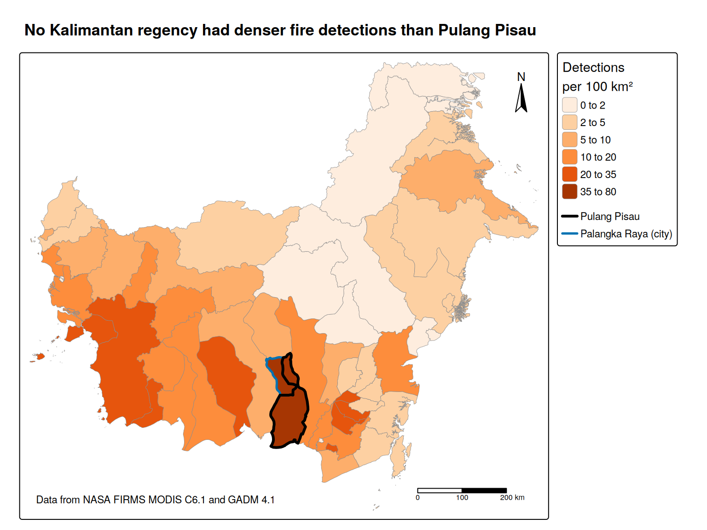
tm_shape(kal_rate) +
tm_polygons(fill = "per100",
fill.scale = tm_scale_intervals(style = "fixed",
breaks = c(0, 2, 5, 10, 20, 35, 80),
labels = c("0 to 2", "2 to 5", "5 to 10", "10 to 20", "20 to 35", "35 to 80"),
values = "brewer.oranges"),
fill.legend = tm_legend(title = "Detections\nper 100 km²",
position = tm_pos_out("right", "center")),
col = "grey55", lwd = 0.4) +
tm_shape(filter(kal_rate, NAME_2 == "PalangkaRaya")) +
tm_borders(col = col_accent, lwd = 2.5) +
tm_shape(filter(kal_rate, NAME_2 == "PulangPisau")) +
tm_borders(col = "black", lwd = 3) +
tm_add_legend(type = "lines", labels = c("Pulang Pisau", "Palangka Raya (city)"),
col = c("black", col_accent), lwd = c(3, 2.5),
position = tm_pos_out("right", "center")) +
tm_scalebar(position = c("right", "bottom"), breaks = c(0, 100, 200)) +
tm_compass(position = c("right", "top")) +
tm_title("No Kalimantan regency had denser fire detections than Pulang Pisau", size = 1.2, fontface = "bold") +
tm_credits("Data from NASA FIRMS MODIS C6.1 and GADM 4.1", position = c("left", "bottom"))kal_rate %>%
st_drop_geometry() %>%
mutate(area_km2 = as.numeric(st_area(kal_rate)) / 1e6,
rank_by_count = min_rank(desc(detections))) %>%
arrange(desc(per100)) %>%
slice_head(n = 6) %>%
transmute(unit = NAME_2, type = TYPE_2, detections, area_km2 = round(area_km2),
per_100_km2 = round(per100, 1), rank_by_count) %>%
kable(format.args = list(big.mark = ","))| unit | type | detections | area_km2 | per_100_km2 | rank_by_count |
|---|---|---|---|---|---|
| PalangkaRaya | Kota | 1,425 | 2,607 | 54.7 | 9 |
| PulangPisau | Kabupaten | 3,585 | 9,740 | 36.8 | 2 |
| HuluSungaiSelatan | Kabupaten | 556 | 1,707 | 32.6 | 26 |
| Tapin | Kabupaten | 693 | 2,193 | 31.6 | 24 |
| KayongUtara | Kabupaten | 1,405 | 4,614 | 30.5 | 10 |
| Sukamara | Kabupaten | 953 | 3,283 | 29.0 | 18 |
Reading the map. Pulang Pisau had about 37 detections per 100 km², the most of any regency in Kalimantan. Only the city of Palangka Raya next door was denser. Both sit on the deep peat of the south coast.
A detection is not a fire, though. One fire seen on four passes counts four times here, which is why repeats are merged.
Task 2. First-Order Point-Pattern Analysis
Task 2 answers Q1, when and where the fires burned.
First-order analysis looks at how the intensity, the number of events per km², changes across space and time.
When Did the Fires Happen
Timing comes first. count() gives events per day, and a 7-day average smooths out cloudy days.
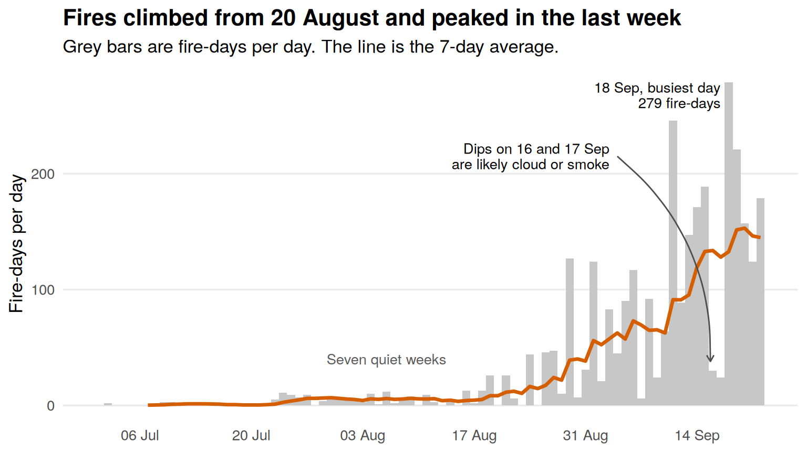
ggplot(daily, aes(date_local, events)) +
geom_col(fill = "grey78", width = 1) +
geom_line(aes(y = roll7), colour = col_fire, linewidth = 1.2, na.rm = TRUE) +
annotate("text", x = peak_day$date_local - 1, y = peak_day$events,
label = paste0(format(peak_day$date_local, "%d %b"), ", busiest day\n",
peak_day$events, " fire-days"),
hjust = 1, vjust = 1, size = 3.6, lineheight = 0.9) +
annotate("curve", x = as_date("2026-09-04"), y = 215, xend = sep_dips$date_local[1] - 0.3,
yend = sep_dips$events[1] + 8, curvature = -0.25, colour = "grey30",
arrow = arrow(length = unit(0.18, "cm"))) +
annotate("text", x = as_date("2026-09-03"), y = 215,
label = paste0("Dips on ", format(sep_dips$date_local[1], "%d"), " and ",
format(sep_dips$date_local[2], "%d %b"), "\nare likely cloud or smoke"),
hjust = 1, size = 3.6, lineheight = 0.9) +
annotate("text", x = as_date("2026-08-06"), y = 40,
label = "Seven quiet weeks", colour = "grey35", size = 3.6) +
scale_x_date(date_breaks = "2 weeks", date_labels = "%d %b") +
labs(title = "Fires climbed from 20 August and peaked in the last week",
subtitle = "Grey bars are fire-days per day. The line is the 7-day average.",
x = NULL, y = "Fire-days per day") +
theme_minimal(base_size = 13) +
theme(plot.title = element_text(face = "bold", size = 16),
panel.grid.minor = element_blank(), panel.grid.major.x = element_blank())Very little burned for seven weeks, then the season started fast. The 7-day average rose from about 20 August to a peak on 20 September. September has 82 percent of all fire-days, and the busiest day was 18 September with 279.
The one-day drops, such as 16 and 17 September with 30 and 24 fire-days, are most likely cloud or smoke. The record also stops on 22 September with fires still burning, so the true peak may be later.
Burning Again in the Same Place
Peat can smoulder and flare up again. For each fire-day, the number of days since that cell last burned is counted.
days since the same cell last burned
reburn <- fires %>%
st_drop_geometry() %>%
arrange(cell, date_local) %>%
group_by(cell) %>%
mutate(gap = as.numeric(date_local - lag(date_local))) %>%
ungroup() %>%
mutate(since = cut(gap, c(0, 1, 2, 3, 7, 14, 90),
labels = c("1", "2", "3", "4 to 7", "8 to 14", "15 or more")),
since = fct_relevel(fct_na_value_to_level(since, "first time"), "first time"),
within_week = !is.na(gap) & gap <= 7)
reburn_tab <- reburn %>% count(since, within_week)
share_rep <- mean(reburn$within_week)
reburn_tab %>% select(-within_week) %>% kable(col.names = c("days since the cell last burned", "fire-days"))| days since the cell last burned | fire-days |
|---|---|
| first time | 1503 |
| 1 | 759 |
| 2 | 309 |
| 3 | 190 |
| 4 to 7 | 154 |
| 8 to 14 | 97 |
| 15 or more | 53 |
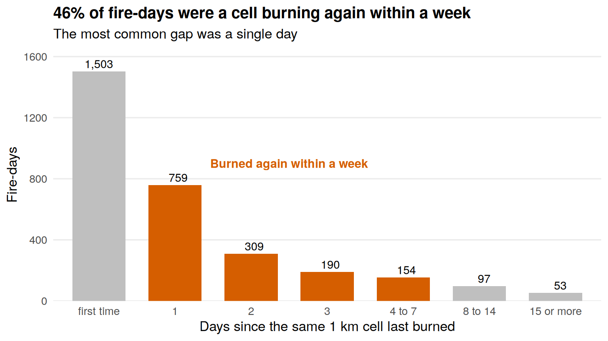
ggplot(reburn_tab, aes(since, n, fill = within_week)) +
geom_col(width = 0.7) +
geom_text(aes(label = format(n, big.mark = ",")), vjust = -0.4, size = 3.8) +
scale_fill_manual(values = c("TRUE" = col_fire, "FALSE" = "grey75"), guide = "none") +
scale_y_continuous(expand = expansion(mult = c(0, 0.1))) +
annotate("text", x = 3.5, y = 900, label = "Burned again within a week",
colour = col_fire, fontface = "bold", size = 4) +
labs(title = paste0(round(100 * share_rep), "% of fire-days were a cell burning again within a week"),
subtitle = "The most common gap was a single day",
x = "Days since the same 1 km cell last burned", y = "Fire-days") +
theme_minimal(base_size = 13) +
theme(plot.title = element_text(face = "bold", size = 15),
panel.grid.major.x = element_blank(), panel.grid.minor = element_blank())Many places burned more than once. Of the 3,065 fire-days, 1,503 were a cell burning for the first time. Another 46 percent were a cell that had burned in the past week, most often the day before (759 fire-days). Smouldering peat fits this, but so would a fire relit by people or hidden by cloud for a day.
For crews, this means a fire that looks finished may start again. For the analysis, a cell burning several days in a row creates space-time clustering by itself, so the Robustness Checks in Task 4 repeat the space-time test on newly burning cells only.
Where Did the Fires Happen, by Half Month
The same events are split into six half-month maps on the same extent.
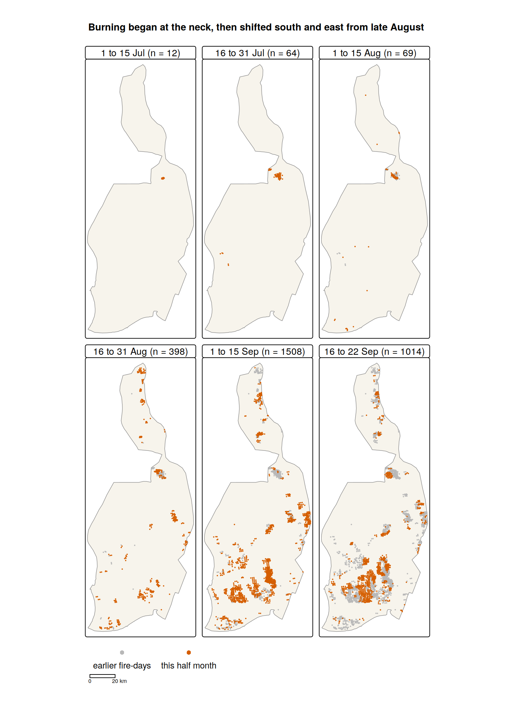
tm_shape(pp_sf) +
tm_polygons(fill = col_land, col = "grey50") +
tm_shape(halfmonth) +
tm_dots(fill = "when", size = 0.12,
fill.scale = tm_scale_categorical(values = c("earlier" = "grey72",
"this half month" = col_fire)),
fill.legend = tm_legend_hide()) +
tm_add_legend(type = "symbols", labels = c("earlier fire-days", "this half month"),
fill = c("grey72", col_fire), col = NA, size = 0.7, text.size = 1.1,
orientation = "landscape", position = tm_pos_out("center", "bottom")) +
tm_facets(by = "panel_i", ncol = 3, free.coords = FALSE) +
tm_scalebar(position = tm_pos_out("center", "bottom"), breaks = c(0, 20)) +
tm_layout(panel.label.size = 1.1, panel.label.bg.color = "white") +
tm_title("Burning began at the neck, then shifted south and east from late August",
size = 1.3, fontface = "bold")In July almost all fires were in one patch below the narrow neck. From late August new fires appeared in the north, on the east edge and on the south coast, and in September the heaviest burning moved to the south-central peat. Fire-days rose from 12 in early July to 1,508 in early September, and the last seven days alone had 1,014.
Only 8 percent of September fire-days were in cells that had burned before September, so the fires moved onto new ground. Most repeat burning (Figure 4) happened within September.
Kernel Density Estimation
KDE turns points into a smooth surface of fire-days per km². It is used instead of quadrat counts, which depend on where the grid is drawn. The bandwidth, sigma, sets how far each point is spread. A small sigma shows every small group of fires, and a large sigma blends them into wide zones.
Choosing the Bandwidth
spatstat’s bandwidth selectors give quite different answers.
four bandwidth selectors, in km
bw_tab <- tibble(
selector = c("bw.diggle", "bw.ppl", "bw.scott.iso", "bw.CvL"),
target = c("mean square error of the intensity estimate (Berman and Diggle)",
"likelihood cross-validation",
"rule of thumb from the spread of points",
"sum of inverse intensities matches the window area"),
sigma_km = c(bw.diggle(fire_ppp_u), bw.ppl(fire_ppp_u),
bw.scott.iso(fire_ppp_u), bw.CvL(fire_ppp_u))
)
kable(bw_tab, digits = 2)| selector | target | sigma_km |
|---|---|---|
| bw.diggle | mean square error of the intensity estimate (Berman and Diggle) | 0.64 |
| bw.ppl | likelihood cross-validation | 0.84 |
| bw.scott.iso | rule of thumb from the spread of points | 7.53 |
| bw.CvL | sum of inverse intensities matches the window area | 9.53 |
bw.diggle() and bw.ppl() pick less than 1 km, smaller than a MODIS pixel, so they are ruled out. bw.scott.iso() gives 7.5 km and is the main bandwidth, and bw.CvL() gives 9.5 km. A 2 km surface is also shown, and the Robustness Checks repeat the tests at 5 km.
Assumptions. Every event counts equally, the smoothing is the same everywhere, and land just outside the boundary is like land inside.
adaptive.density() uses a narrower kernel where fires are dense and a wider one where they are sparse. It is the third map.
three density surfaces, events per km sq
kde_2 <- density(fire_ppp_u, sigma = 2, edge = TRUE, positive = TRUE)
kde_sc <- density(fire_ppp_u, sigma = sig_scott, edge = TRUE, positive = TRUE)
kde_ad <- adaptive.density(fire_ppp_u, method = "kernel")
to_rast <- function(im) {
r <- rast(im)
ext(r) <- as.vector(ext(r)) * 1000 # km back to metres
crs(r) <- "EPSG:32749"
r
}
kde_stack <- c(to_rast(kde_2), to_rast(kde_sc), to_rast(kde_ad))
names(kde_stack) <- c("Fixed, sigma 2 km",
paste0("Fixed, sigma ", round(sig_scott, 1), " km (Scott)"),
"Adaptive")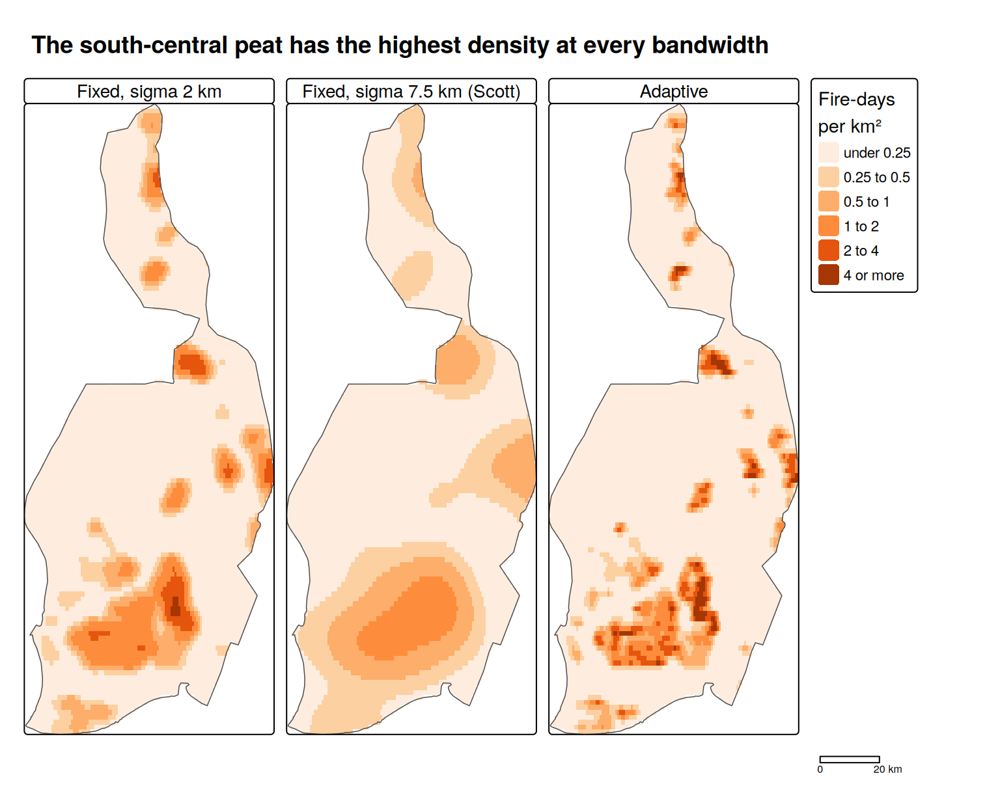
tm_shape(kde_stack) +
tm_raster(col.scale = tm_scale_intervals(style = "fixed",
breaks = c(0, 0.25, 0.5, 1, 2, 4, 16),
labels = c("under 0.25", "0.25 to 0.5", "0.5 to 1", "1 to 2", "2 to 4", "4 or more"),
values = "brewer.oranges"),
col.legend = tm_legend(title = "Fire-days\nper km²",
position = tm_pos_out("right", "center")),
col.free = FALSE) +
tm_shape(pp_sf) +
tm_borders(col = "grey30") +
tm_layout(panel.label.size = 1, panel.label.bg.color = "white") +
tm_scalebar(position = tm_pos_out("right", "bottom"), breaks = c(0, 20)) +
tm_title("The south-central peat has the highest density at every bandwidth",
size = 1.3, fontface = "bold")All three maps put the highest density in the south-central peat. The 2 km and adaptive maps also show smaller hot spots at the neck, on the east edge and in the north.
The peak value depends on the bandwidth, from 4.8 fire-days per km² at 2 km to 1.5 at 7.5 km, so a density figure means little without its bandwidth. The south-central peat is the clearest place for crew bases and water points.
Spatio-Temporal Kernel Density
STKDE smooths over space and time together, so it avoids the fixed half-month breaks. spattemp.density() of sparr is used with oversmoothing bandwidths from OS.spattemp(), which are unlikely to create false small hot spots (Fernando and Hazelton, 2014; Davies, Marshall and Hazelton, 2018).
Assumptions. Space and time are smoothed separately, and sparr corrects for the start and end of the time window.
STKDE with oversmoothing bandwidths
bw_st <- OS.spattemp(fire_ppp_km)
bw_st h lambda
8.086568 2.570911 fire_stkde <- spattemp.density(fire_ppp_km, h = bw_st[1], lambda = bw_st[2])Values are expected fire-days per km² per day, so all six maps share one scale.
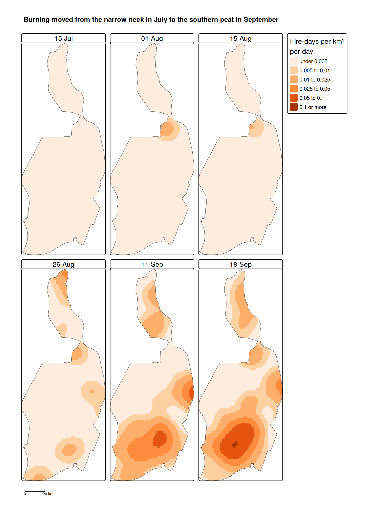
tm_shape(st_stack) +
tm_raster(col.scale = tm_scale_intervals(style = "fixed",
breaks = c(0, 0.005, 0.01, 0.025, 0.05, 0.1, 0.2),
labels = c("under 0.005", "0.005 to 0.01", "0.01 to 0.025", "0.025 to 0.05", "0.05 to 0.1", "0.1 or more"),
values = "brewer.oranges"),
col.legend = tm_legend(title = "Fire-days per km²\nper day",
position = tm_pos_out("right", "center")),
col.free = FALSE) +
tm_shape(pp_sf) +
tm_borders(col = "grey30") +
tm_facets(ncol = 3) +
tm_scalebar(position = tm_pos_out("center", "bottom"), breaks = c(0, 20)) +
tm_layout(panel.label.size = 1.1, panel.label.bg.color = "white") +
tm_title("Burning moved from the narrow neck in July to the southern peat in September",
size = 1.3, fontface = "bold")In mid July and early August the main warm area is the neck. By 26 August the north and the south are warming, and by 18 September the south-central peat peaks at about 0.1 fire-days per km² per day, with a second hot spot on the east edge.
The bandwidths are 8.1 km and 2.6 days, so short-lived hot spots are smoothed away. The neck burned weeks before the rest of the regency, which is worth checking in other years.
Task 3. Second-Order Point-Pattern Analysis
Task 3 answers Q2 to Q4.
How the Tests Work
Second-order analysis looks at pairs of events and asks whether they are closer together than a null model predicts. Each test names its null model.
The tests use Monte Carlo simulation. Many patterns are simulated from the null model, and their curves form a band called an envelope. An observed curve outside the envelope is a significant result. Global envelopes are used, which test all distances at once (Baddeley et al., 2015). With 99 simulations and nrank = 5, this is a test at the 5 percent level. Distances run from 1 to 15 km, since distances under 1 km are not reliable.
Border correction is used, which spatstat applies by default to large patterns. It leaves out points too close to the edge, so the range stops at 15 km, before the narrow northern strip drops out.
Q2. Are Fires More Clustered Than Random?
Research question. Are fires closer together than they would be at random?
Method. Besag’s L function, Lest(), with a global envelope from 99 simulations of complete spatial randomness (CSR). L is a rescaled form of Ripley’s K function, which counts neighbours within distance r. Under CSR, L(r) − r is zero, so a curve above the envelope means clustering. L is used instead of G or F because it uses all pairs, not only nearest neighbours.
Null model. CSR, where every location is equally likely and fires are independent.
Assumptions. CSR assumes the same intensity everywhere. The first-order maps already show this is false, so this test is only a baseline.
L function against CSR
set.seed(2026)
env_csr <- envelope(fire_ppp_u, Lest, nsim = 99, rmax = 15,
correction = "border", global = TRUE, nrank = 5, ginterval = c(1, 15),
savefuns = TRUE, verbose = FALSE)The Clark-Evans ratio is 0.48, against about 1 under CSR, so the nearest fire is about half as far away as it would be at random. This is only a rough guide, because many nearest neighbours are under 1 km apart.
Repeat burning also adds to L. The 3,065 fire-days fall in only 1,503 cells, so a cell that burns on several days adds close pairs at every distance. This is another reason for the space-time test in Q4.
Q3. Are Fires Still Clustered After Allowing for Density?
Research question. Do fires still cluster after allowing for uneven density?
Method. The inhomogeneous L function, Linhom() (Baddeley, Møller and Waagepetersen, 2000). Pairs in dense areas count for less, so clustering that only comes from high density is removed.
Null model. An inhomogeneous Poisson process with the Scott KDE as its intensity. Fires are more likely where density is high but are still independent of each other.
Parameters. Sigma is 7.5 km with leave-one-out, and the intensity is estimated again for each simulation (Baddeley et al., 2015).
Assumptions. The intensity surface must be right. If sigma is too small, the surface absorbs the clusters. If it is too large, uneven density shows up as clustering. One pattern cannot fully separate the two (Diggle, 2013), so the Robustness Checks try other values.
inhomogeneous L function against inhomogeneous Poisson
lam_sc <- density(fire_ppp_u, sigma = sig_scott, edge = TRUE, positive = TRUE)
set.seed(2026)
env_inhom <- envelope(fire_ppp_u, Linhom, nsim = 99, rmax = 15,
sigma = sig_scott, leaveoneout = TRUE,
simulate = expression(rpoispp(lam_sc)),
correction = "border", global = TRUE, nrank = 5, ginterval = c(1, 15),
savefuns = TRUE, verbose = FALSE)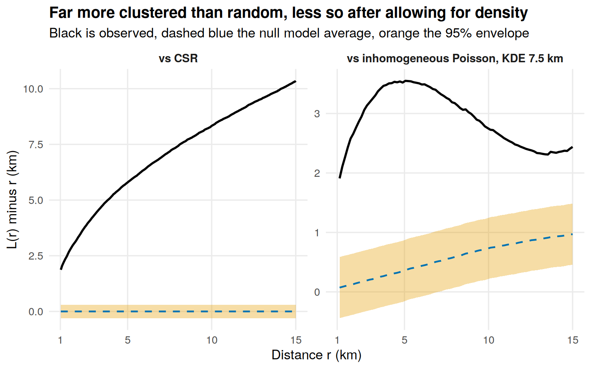
ggplot(env_df, aes(r)) +
geom_ribbon(aes(ymin = lo, ymax = hi), fill = col_band, alpha = 0.35) +
geom_line(aes(y = ref), colour = col_accent, linetype = "dashed", linewidth = 0.8) +
geom_line(aes(y = obs), colour = "black", linewidth = 1) +
facet_wrap(~ test, scales = "free_y") +
scale_x_continuous(breaks = c(1, 5, 10, 15)) +
labs(title = "Far more clustered than random, less so after allowing for density",
subtitle = "Black is observed, dashed blue the null model average, orange the 95% envelope",
x = "Distance r (km)", y = "L(r) minus r (km)") +
theme_minimal(base_size = 13) +
theme(plot.title = element_text(face = "bold", size = 15),
strip.text = element_text(face = "bold", size = 11),
panel.grid.minor = element_blank())Reading the curves. Against CSR the observed curve is far above the envelope, at 5.8 km against an envelope top of 0.3 km at 5 km. Against the inhomogeneous null it is still above the envelope from 1.1 to 15 km, at 3.55 km against 0.88 km at 5 km.
The CSR result mostly confirms the KDE maps. The second result means fires have more neighbours than a 7.5 km density surface predicts, but with a 5 km bandwidth this disappears (see Robustness Checks). So the maps alone cannot show whether one fire raises the risk nearby. Q4 adds time to test this.
Q4. Are Fires That Are Close in Space Also Close in Time?
Research question. Are fires that are close in space also close in time, beyond each area’s own fire season?
Why not STIKhat(). The space-time K function from class assumes constant intensity unless one is supplied, and supplying one brings back the bandwidth problem. A shuffling test avoids both.
Method. A Knox-style test (Knox, 1964; Diggle et al., 1995). Pairs of events within 15 km are grouped by distance apart and days apart. Each group’s count is compared with 199 copies of the data in which the dates are shuffled among the fixed locations. Results are shown as observed divided by expected.
Null model, step 1. Dates are shuffled across the whole regency. Locations and daily counts stay the same, so only the link between where and when is removed.
Step 1 is not enough, because different areas burned at different times (Figure 7). That alone would make nearby fires look close in time.
Null model, step 2. Dates are shuffled only within each 10 km block, so each block keeps its own fire season. Any extra pairs left come from fires closer than a block, either fires affecting each other or a fire front crossing a block. The 10 km size is a judgement call.
Knox style space-time test, optional shuffling within blocks
knox_grid <- function(ppp, s_br, t_br, nsim = 199, rmax = 15, block = NULL) {
n <- npoints(ppp)
tt <- marks(ppp)
ds <- as.vector(dist(cbind(ppp$x, ppp$y)))
ij <- which(lower.tri(matrix(0, n, n)), arr.ind = TRUE) # same order as dist()
keep <- ds <= rmax
ds <- ds[keep]; i <- ij[keep, 1]; j <- ij[keep, 2]
s_bin <- cut(ds, s_br, include.lowest = TRUE)
tab <- function(tv) table(s_bin, cut(abs(tv[i] - tv[j]), t_br, include.lowest = TRUE))
shuffle <- function() {
if (is.null(block)) return(sample(tt))
out <- tt
for (b in unique(block)) {
k <- which(block == b)
out[k] <- tt[k][sample.int(length(k))]
}
out
}
obs <- tab(tt)
sims <- replicate(nsim, tab(shuffle()))
list(obs = obs, sims = sims, expected = apply(sims, 1:2, mean),
p = (1 + apply(sweep(sims, 1:2, obs, ">="), 1:2, sum)) / (nsim + 1))
}
# pooled test for the core, pairs under 3 km and 1 to 3 days apart
core_test <- function(k, rows = 1:3, cols = 2:3) {
o <- sum(k$obs[rows, cols])
s <- apply(k$sims[rows, cols, , drop = FALSE], 3, sum)
tibble(ratio = round(o / mean(s), 2), p = (1 + sum(s >= o)) / (length(s) + 1))
}
s_breaks <- c(0, 1, 2, 3, 5, 7.5, 10, 15) # km
t_breaks <- c(-0.5, 0.5, 1.5, 3.5, 7.5, 14.5, 30.5, 90) # days apart, same day kept on its own
block_10 <- paste(floor(fire_ppp_km$x / 10), floor(fire_ppp_km$y / 10))
set.seed(2026)
knox_free <- knox_grid(fire_ppp_km, s_breaks, t_breaks)
set.seed(2026)
knox_block <- knox_grid(fire_ppp_km, s_breaks, t_breaks, block = block_10)
bind_rows(core_test(knox_free) %>% mutate(test = "step 1"),
core_test(knox_block) %>% mutate(test = "step 2")) %>%
kable()| ratio | p | test |
|---|---|---|
| 1.94 | 0.005 | step 1 |
| 1.33 | 0.005 | step 2 |
Same-day pairs are shown but not counted, since one large fire in a wide pixel can look like two. The main test pools pairs under 3 km and 1 to 3 days apart, a range a patrol can cover. These boxes were chosen after seeing the grid, so the Robustness Checks retest them on other data. The events fall into 85 blocks, and 7 blocks hold only one event.
Edge effects. No edge correction is needed, because locations never move. Pairs lost at the boundary are missing from the data and the shuffles alike.
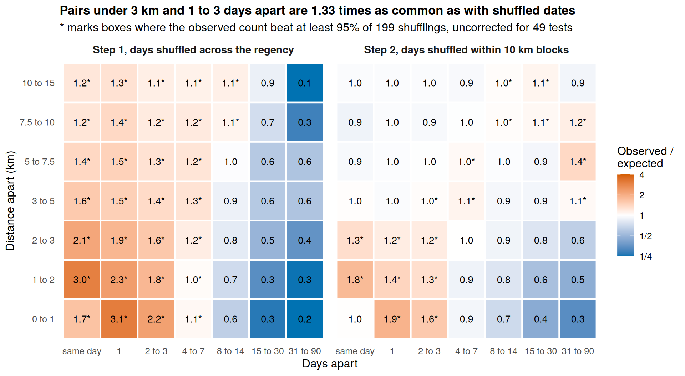
ggplot(kx, aes(lag, dist, fill = pmin(pmax(log2(ratio), -2), 2))) +
geom_tile(colour = "white", linewidth = 0.8) +
geom_text(aes(label = paste0(sprintf("%.1f", ratio), sig)), size = 3.6) +
scale_fill_gradient2(low = col_accent, mid = "white", high = col_fire, midpoint = 0,
limits = c(-2, 2), breaks = -2:2,
labels = c("1/4", "1/2", "1", "2", "4"),
name = "Observed /\nexpected") +
facet_wrap(~ test) +
labs(title = paste0("Pairs under 3 km and 1 to 3 days apart are ", core_test(knox_block)$ratio,
" times as common as with shuffled dates"),
subtitle = "* marks boxes where the observed count beat at least 95% of 199 shufflings, uncorrected for 49 tests",
x = "Days apart", y = "Distance apart (km)") +
theme_minimal(base_size = 12) +
theme(plot.title = element_text(face = "bold", size = 13),
strip.text = element_text(face = "bold", size = 11),
panel.grid = element_blank())Fires close in space were also close in time. In step 1, pairs under 3 km and 1 to 3 days apart are 1.94 times as common as in the shuffles, mostly because different areas burned at different times. With each block’s timing fixed in step 2, they are still 1.33 times as common, about a third more (p = 0.005, the smallest possible).
The test cannot say whether fire spread, one person lit several plots, or fire moved through peat. With 708,650 pairs, small ratios can still be significant, and the extra pairs at 5 to 10 km and 31 to 90 days likely come from timing within blocks. Q6 in the Bonus section tests whether the result helps patrols.
Task 4. Integration and Interpretation
Putting the Findings Together
The table below answers the integration questions from the brief, one per row.
| Question | Answer from this study |
|---|---|
| What does first-order analysis show? | Fires were very uneven in space and time. Burning began at the neck in July, spread from late August and peaked in the south-central peat in September. Almost half of fire-days were a cell burning again within a week. |
| What does second-order analysis show? | Fires are far more clustered than random. After allowing for density, the answer depends on the bandwidth. The space-time test is clearer. Fires under 3 km apart were 1 to 3 days apart more often than random dates give. |
| How do they fit together? | The first-order maps show where to base crews. The space-time result, and the watch zone in the Bonus (Q6), show where to look each day. |
| Are the results consistent? | Mostly. All first-order maps agree, and Q4 holds for VIIRS, new cells and pairs 2 to 3 km apart. Only Q3 changes with the bandwidth. |
| Which assumptions matter most? | The density surface in Q3, and in Q4 the assumption that dates can be swapped within a 10 km block. |
| Other explanations? | Cloud hides fires on some days. One person lighting several plots looks the same as spread. A fire front crossing one block over a few days would also pass the Q4 test. |
Robustness Checks
Each check below changes one choice and reruns the tests.
- Bandwidth in Q3. Sigma is set to 5 and 10 km as well as the Scott value.
- Sensor. Everything is rerun on VIIRS, which has 375 m pixels and sees smaller fires. Its only data gap in the study period, 11 to 16 July, is before the main season.
- Repeat burning. Q4 is rerun on newly burning cells only, which removes a cell burning day after day (Figure 4). Pairs 2 to 3 km apart are also tested alone, since one fire seen in two neighbouring cells is usually under 2 km apart.
check 1, inhomogeneous L at three bandwidths
linhom_check <- function(X, s, nsim = 99) {
lam <- density(X, sigma = s, edge = TRUE, positive = TRUE)
sims <- rpoispp(lam, nsim = 2 * nsim) # a global envelope needs a second set for the mean
e <- envelope(X, Linhom, simulate = sims, nsim = nsim, rmax = 15,
sigma = s, leaveoneout = TRUE, correction = "border",
global = TRUE, nrank = 5, ginterval = c(1, 15), verbose = FALSE)
d <- as.data.frame(e)
tibble(sigma_km = round(s, 1),
clustered = any(d$obs > d$hi),
from_km = if (any(d$obs > d$hi)) round(min(d$r[d$obs > d$hi]), 1) else NA,
to_km = if (any(d$obs > d$hi)) round(max(d$r[d$obs > d$hi]), 1) else NA)
}
set.seed(2026)
sens_bw <- map_dfr(c(5, sig_scott, 10), ~ linhom_check(fire_ppp_u, .x))
kable(sens_bw)| sigma_km | clustered | from_km | to_km |
|---|---|---|---|
| 5.0 | FALSE | NA | NA |
| 7.5 | TRUE | 1.1 | 15 |
| 10.0 | TRUE | 1.1 | 15 |
check 2, rebuild events from VIIRS
viirs_raw <- read_csv("data/rawdata/firms/viirs_snpp_2026_kalimantan.csv")
viirs_ev <- viirs_raw %>%
mutate(t_local = with_tz(ymd_hm(paste(acq_date, sprintf("%04d", acq_time)), tz = "UTC"),
"Asia/Jakarta"),
date_local = as_date(t_local)) %>%
filter(confidence != "l",
date_local >= as_date("2026-07-01"), date_local <= as_date("2026-09-22")) %>%
st_as_sf(coords = c("longitude", "latitude"), crs = 4326) %>%
st_transform(32749) %>%
st_filter(pp_sf)
vxy <- st_coordinates(viirs_ev)
viirs_ev <- viirs_ev %>%
mutate(cell = paste(floor(vxy[, 1] / 1000), floor(vxy[, 2] / 1000))) %>%
group_by(cell, date_local) %>%
slice_max(frp, n = 1, with_ties = FALSE) %>%
ungroup()
viirs_ppp <- rescale.ppp(as.ppp(st_geometry(viirs_ev), W = pp_owin), 1000, "km")
marks(viirs_ppp) <- yday(viirs_ev$date_local)
npoints(viirs_ppp)[1] 6467VIIRS rows with low confidence (l) are removed, and the detection with the highest fire radiative power is kept for each cell and day.
check 2 and 3, rerun Q3 and Q4
sig_viirs <- as.numeric(bw.scott.iso(unmark(viirs_ppp)))
sens_viirs_l <- linhom_check(unmark(viirs_ppp), sig_viirs)
block_v <- paste(floor(viirs_ppp$x / 10), floor(viirs_ppp$y / 10))
set.seed(2026)
knox_viirs <- knox_grid(viirs_ppp, s_breaks, t_breaks, nsim = 99, block = block_v)
fires_new <- fires %>%
arrange(cell, date_local) %>%
group_by(cell) %>%
mutate(gap_days = as.numeric(date_local - lag(date_local))) %>%
ungroup() %>%
filter(is.na(gap_days) | gap_days > 7)
new_ppp <- rescale.ppp(as.ppp(st_geometry(fires_new), W = pp_owin), 1000, "km")
marks(new_ppp) <- fires_new$doy
block_n <- paste(floor(new_ppp$x / 10), floor(new_ppp$y / 10))
set.seed(2026)
knox_new <- knox_grid(new_ppp, s_breaks, t_breaks, block = block_n)| check | events | observed over expected | p-value |
|---|---|---|---|
| MODIS, main result | 3,065 | 1.33 | 0.005 |
| VIIRS | 6,467 | 1.24 | 0.010 |
| MODIS, newly burning cells only | 1,653 | 1.33 | 0.005 |
| MODIS, pairs 2 to 3 km only | 3,065 | 1.17 | 0.005 |
The Q4 result holds in every check. VIIRS gives 1.24 (99 shuffles, so the smallest p is 0.01), newly burning cells give 1.33, and pairs 2 to 3 km apart give 1.17. So the result is not just one cell burning day after day, or one fire seen in two cells, although a very wide pixel could still play a part.
| check | events | Q3, inhomogeneous L |
|---|---|---|
| MODIS, KDE sigma 5 km | 3,065 | inside envelope |
| MODIS, KDE sigma 7.5 km | 3,065 | above envelope, 1.1 to 15 km |
| MODIS, KDE sigma 10 km | 3,065 | above envelope, 1.1 to 15 km |
| VIIRS, KDE sigma 6.9 km | 6,467 | above envelope, 1.1 to 15 km |
The Q3 result changes with the bandwidth. The extra clustering disappears at 5 km and appears at 7.5 and 10 km, for the reasons given under Q3 (Diggle, 2013). Q3 is therefore left open. Q4 gives the stronger evidence, because timing differences between blocks cannot create its result.
Limitations
- Satellites miss fires under cloud and smoke, which is worst at the peak, so September counts are probably low.
- NRT data is provisional and will change when SP data replaces it.
- The 1 km grid can split one fire into two events, and the 7-day rule is a judgement call.
- GADM boundaries are simplified and cut through peat.
- Q3 is unresolved, because one pattern cannot separate fires affecting each other from land that burns easily.
- One season. The watch zone was tested on the same data its settings came from.
- OSM is incomplete, especially for canals.
- Many tests. The Knox grid runs 49 tests, so the main result rests on one pooled test.
Task 5. Geovisualisation and Analytical Interpretation
All figures follow the course guidance on graphs and thematic maps.
- Titles state the finding, and captions give the data source.
- Grey is used for background, and colour only marks what matters. Nothing relies on telling red from green.
- Density maps use one orange hue from light to dark, with six classes and the same breaks in every panel.
- Labels sit on the chart instead of in a legend where possible, and legends sit outside maps.
- Each map is followed by its statistical test, and each figure has a reading under 150 words.
The main figures are listed below, and each one’s reading sits directly under it.
| Figure | Question | What it shows |
|---|---|---|
| Figure 3 | Q1 | When the season started and peaked |
| Figure 4 | Q1 | How often a cell burned again |
| Figure 5 | Q1 | How burning moved across the regency |
| Figure 6 | Q1 | Where density was highest, at three bandwidths |
| Figure 7 | Q1 | Where and when density peaked |
| Figure 8 | Q2, Q3 | Clustering against two null models |
| Figure 9 | Q4 | Which distances and gaps in days have extra pairs |
| Figure 10 | Q5 | How fire intensity changes with distance to roads, canals and rivers |
| Figure 11 | Q6 | How the watch zone compares with a hotspot map |
Task 6. Public-Safety Planning and Management
Evidence is what the analysis shows. Possible action is what could follow. Needed first is what should be checked before acting.
| Area | Evidence | Possible action | Needed first |
|---|---|---|---|
| Where to base crews and water | The south-central peat had the highest density at every bandwidth, with a second hot spot on the east edge. Water shortages are already slowing firefighting (Prokalteng, 2026) | Base crews and water points there before the next dry season | Burned area and peat depth |
| When to scale up | The neck burned from July, the rest from about 20 August | Check in other years whether the neck burns first | Earlier seasons and rainfall data |
| Finishing the job | 46 percent of fire-days were a cell burning again within a week | Go back to put-out fires the next day | Field records of rekindled fires |
| Where to send patrols | The 3-day watch zone caught 76 percent of new cells, against at most 64 percent for a hotspot map of the same size, on this season’s data | Draw the zone each morning and patrol there first | A test on another season |
| Where patrols can reach | Only 4 of 3,065 fire-days were over 14 km from a road or track | Plan routes along roads and tracks | Land-use and concession maps |
| Canals | The canal result was weak, partly because OSM misses canals | None yet | A full canal map |
| Fire monitoring | Raw counts double count fires and put night passes on the wrong day | Merge repeats and use local time in reports | A check that VIIRS and MODIS can be combined |
All of this is about fire-days seen from space, not harm to people, and none of it shows cause. The watch zone says where the next fire is likely, not whether fire spread or someone lit another plot.
Bonus
The core analysis leaves two gaps. The density surfaces do not explain what makes land burn, and the Q4 test is not something a crew can use directly. Q5 tests access by road and canal, and Q6 turns Q4 into a daily patrol rule.
Q5. Do Roads and Canals Explain Where Fires Burn?
Research question. Are fires closer to roads and canals, and does this explain the clustering?
Why. Most peat fires are started by people (Page and Hooijer, 2016), who reach the peat by road and canal. Canals also dry the peat out.
Method. Distance maps are built from OSM. rhohat() shows how fire intensity changes with each distance. ppm() then fits a Poisson point process model, a kind of regression for points, using the three distances. This model replaces the KDE in an inhomogeneous L test, to see how much clustering is left after allowing for access.
Preparing the OSM Layers
Only OSM features within 5 km of the regency are read, so fires near the boundary can still see canals just outside.
read OSM waterways and roads near Pulang Pisau
pp_buf <- st_buffer(pp_sf, 5000)
bbox_wkt <- st_as_text(st_geometry(st_transform(pp_buf, 4326)))
waterways <- st_read("data/rawdata/osm/gis_osm_waterways_free_1.shp",
wkt_filter = bbox_wkt, quiet = TRUE) %>%
st_transform(32749) %>% st_intersection(pp_buf)
roads <- st_read("data/rawdata/osm/gis_osm_roads_free_1.shp",
wkt_filter = bbox_wkt, quiet = TRUE) %>%
st_transform(32749) %>% st_intersection(pp_buf)
bind_rows(waterways %>% mutate(layer = "waterways"), roads %>% mutate(layer = "roads")) %>%
mutate(km = as.numeric(st_length(geometry)) / 1000) %>%
st_drop_geometry() %>%
group_by(layer, fclass) %>%
summarise(features = n(), km = round(sum(km)), .groups = "drop") %>%
arrange(layer, desc(km)) %>%
kable()| layer | fclass | features | km |
|---|---|---|---|
| roads | residential | 3384 | 1025 |
| roads | service | 1462 | 606 |
| roads | track | 474 | 427 |
| roads | unclassified | 539 | 318 |
| roads | trunk | 93 | 157 |
| roads | tertiary | 166 | 109 |
| roads | path | 241 | 70 |
| roads | primary | 10 | 60 |
| roads | footway | 127 | 16 |
| roads | living_street | 11 | 4 |
| roads | secondary | 5 | 2 |
| roads | track_grade5 | 1 | 2 |
| roads | pedestrian | 9 | 1 |
| roads | trunk_link | 8 | 1 |
| roads | steps | 8 | 0 |
| roads | tertiary_link | 37 | 0 |
| roads | unknown | 1 | 0 |
| waterways | river | 228 | 969 |
| waterways | canal | 514 | 468 |
| waterways | stream | 322 | 229 |
| waterways | drain | 132 | 134 |
Canals are OSM canals and drains. Roads include all roads, tracks and paths except footways. Rivers are a control, because deep peat domes form between rivers.
distance surfaces in km
to_psp <- function(x) {
g <- st_geometry(st_cast(st_cast(x, "MULTILINESTRING"), "LINESTRING"))
rescale.psp(as.psp(g, W = as.owin(pp_buf)), 1000, "km")
}
canal_psp <- to_psp(filter(waterways, fclass %in% c("canal", "drain")))
river_psp <- to_psp(filter(waterways, fclass == "river"))
road_psp <- to_psp(filter(roads, !fclass %in% c("footway", "steps", "pedestrian")))
grid <- as.mask(pp_owin_km, dimyx = c(400, 200))
covs <- list(d_canal = distmap(canal_psp, xy = grid),
d_road = distmap(road_psp, xy = grid),
d_river = distmap(river_psp, xy = grid))How Fire Intensity Changes with Distance
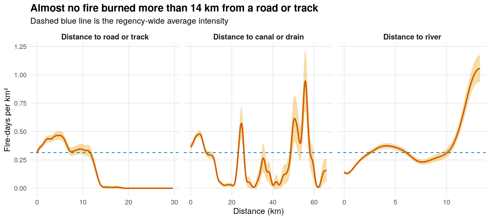
rho_df <- imap_dfr(covs, function(im, nm) {
d <- as.data.frame(rhohat(fire_ppp_u, im)) %>% rename(X = 1)
cap <- quantile(im[pp_owin_km, drop = TRUE], 0.98, na.rm = TRUE)
d %>% filter(X <= cap) %>% mutate(covariate = nm)
}) %>%
mutate(covariate = recode(covariate, d_canal = "Distance to canal or drain",
d_road = "Distance to road or track",
d_river = "Distance to river"),
covariate = factor(covariate, levels = c("Distance to road or track",
"Distance to canal or drain", "Distance to river")))
avg_int <- intensity(fire_ppp_u)
ggplot(rho_df, aes(X, rho)) +
geom_ribbon(aes(ymin = lo, ymax = hi), fill = col_band, alpha = 0.35) +
geom_line(colour = col_fire, linewidth = 1) +
geom_hline(yintercept = avg_int, colour = col_accent, linetype = "dashed") +
facet_wrap(~ covariate, scales = "free_x") +
labs(title = "Almost no fire burned more than 14 km from a road or track",
subtitle = "Dashed blue line is the regency-wide average intensity",
x = "Distance (km)", y = "Fire-days per km²") +
theme_minimal(base_size = 12) +
theme(plot.title = element_text(face = "bold", size = 15),
strip.text = element_text(face = "bold", size = 11),
panel.grid.minor = element_blank())Almost all fires were within reach of a road or track. Intensity stays near or above average up to about 12 km from one, then drops to almost zero. Only 4 of 3,065 fire-days were more than 14 km away, although that land is 16 percent of the regency. 82 percent of fire-days were within 5 km of a road or canal, against 65 percent of the land.
Intensity rises far from rivers, which fits peat domes. The canal curve is noisy, with peaks 50 to 60 km from any mapped canal in the northern strip, where OSM shows almost no canals. The curves show where fires burned, not why.
Fitting the Access Model
Poisson point process models with OSM covariates
m_null <- ppm(fire_ppp_u ~ 1)
m_access <- ppm(fire_ppp_u ~ log(d_canal + 0.5) + log(d_road + 0.5) + log(d_river + 0.5),
data = covs)
coef(summary(m_access))[, c("Estimate", "CI95.lo", "CI95.hi", "Zval")] %>%
round(3) %>% kable()| Estimate | CI95.lo | CI95.hi | Zval | |
|---|---|---|---|---|
| (Intercept) | -1.169 | -1.270 | -1.068 | -22.730 |
| log(d_canal + 0.5) | -0.195 | -0.230 | -0.161 | -11.144 |
| log(d_road + 0.5) | -0.235 | -0.268 | -0.201 | -13.634 |
| log(d_river + 0.5) | 0.458 | 0.408 | 0.507 | 18.070 |
tibble(model = c("constant intensity", "access model"),
AIC = round(c(AIC(m_null), AIC(m_access)))) %>% kable()| model | AIC |
|---|---|
| constant intensity | 13220 |
| access model | 12511 |
The 0.5 km added inside each log keeps zero distances usable and matches the pixel size.
inhomogeneous L with the access model as the null
set.seed(2026)
sims_access <- rpoispp(predict(m_access), nsim = 198)
env_access <- envelope(fire_ppp_u, Linhom, simulate = sims_access, nsim = 99,
lambda = m_access, rmax = 15, correction = "border",
global = TRUE, nrank = 5, ginterval = c(1, 15), verbose = FALSE)Passing the model as lambda refits it for each simulated pattern.
| null model | L(5) minus 5, km | upper envelope at 5 km |
|---|---|---|
| CSR | 5.80 | 0.30 |
| access model (OSM) | 5.34 | 0.30 |
| KDE, sigma 7.5 km | 3.55 | 0.88 |
The access model fits much better than constant intensity, and its AIC (lower is better) falls from 13,220 to 12,511. But at 5 km, L(r) minus r only drops from 5.8 km under CSR to 5.34 km, against 3.55 km for the KDE null. The observed curve stays far above the access model’s envelope at all distances.
Fires are most common near roads and canals, but access explains little of why they cluster. Most of the clustering must come from things OSM does not hold, such as peat depth, land clearing or fires affecting each other. The model’s z values also look more certain than they are, because they ignore clustering.
Q6. Do Recent Fires Predict New Ones Better Than a Hotspot Map?
Research question. Each morning a crew can watch only part of the regency. Should it watch near recent fires, or the places that have burned most?
Why. Q4 found that fires close in space were also close in time. Crime analysts call this a near-repeat pattern (Townsley et al., 2003). It is only useful if recent fires point to new fires better than a hotspot map does.
Method. The test runs for every day from 4 July to 22 September.
- The watch zone is the area within 3 km of the previous three days’ fires. The 3 km and 3 days come from Figure 9, so this is an in-sample test and may flatter the zone.
- The hotspot zone covers the same amount of land on the highest part of a KDE of all earlier fires, at 1.5, 3 and 6 km bandwidths.
- The target is newly burning cells, with no fire in the past 7 days.
- A stricter target, separate new fires, has no other event within 2 km in the past 7 days.
- Fires outside the regency are not used, which affects both zones equally.
A zone that ignored fire history would catch new cells in line with its share of land, which is the minimum to beat.
back-test the watch zone against same-size hotspot zones
fires <- fires %>%
arrange(cell, date_local) %>%
group_by(cell) %>%
mutate(is_new = is.na(lag(date_local)) | as.numeric(date_local - lag(date_local)) > 7) %>%
ungroup()
pp_area <- as.numeric(st_area(pp_sf))
grid_m <- as.mask(pp_owin, eps = 500) # 500 m pixels, in metres
hotspot_catch <- function(d, land, today, sigma) {
past <- filter(fires, date_local <= d - 1)
kd <- density(as.ppp(st_geometry(past), W = pp_owin), sigma = sigma, xy = grid_m, edge = TRUE)
cut_value <- quantile(kd$v, 1 - land, na.rm = TRUE) # same land share as the watch zone
xy <- st_coordinates(today)
sum(kd[ppp(xy[, 1], xy[, 2], window = pp_owin, check = FALSE)] >= cut_value, na.rm = TRUE)
}
watch <- map_dfr(seq(as_date("2026-07-04"), as_date("2026-09-22"), by = "day"), function(d) {
recent <- filter(fires, date_local >= d - 3, date_local <= d - 1)
today <- filter(fires, date_local == d, is_new)
if (nrow(recent) == 0 || nrow(today) == 0) {
return(tibble(date = d, new = nrow(today), caught = 0, land = 0,
hot_1.5 = 0, hot_3 = 0, hot_6 = 0))
}
zone <- st_union(st_buffer(st_geometry(recent), 3000)) %>% st_intersection(st_geometry(pp_sf))
land <- as.numeric(st_area(zone)) / pp_area
tibble(date = d, new = nrow(today),
caught = sum(lengths(st_intersects(today, zone)) > 0),
land = land,
hot_1.5 = hotspot_catch(d, land, today, 1500),
hot_3 = hotspot_catch(d, land, today, 3000),
hot_6 = hotspot_catch(d, land, today, 6000))
})
watch_sum <- watch %>%
summarise(land_covered = weighted.mean(land, new),
newly_burning = sum(new),
watch_zone = sum(caught) / newly_burning,
hotspot_1.5km = sum(hot_1.5) / newly_burning,
hotspot_3km = sum(hot_3) / newly_burning,
hotspot_6km = sum(hot_6) / newly_burning)
kable(watch_sum, digits = 3)| land_covered | newly_burning | watch_zone | hotspot_1.5km | hotspot_3km | hotspot_6km |
|---|---|---|---|---|---|
| 0.152 | 1651 | 0.757 | 0.637 | 0.578 | 0.502 |
The next chunk gives a 95 percent interval for the gap, resampling whole weeks because nearby days share fires, and repeats the test for separate new fires.
uncertainty on the gap, and the stricter target
fire_days <- filter(watch, new > 0)
set.seed(2026)
fire_days$wk <- floor_date(fire_days$date, "week", week_start = 1)
weeks <- split(seq_len(nrow(fire_days)), fire_days$wk)
gap_boot <- replicate(999, {
i <- unlist(sample(weeks, length(weeks), replace = TRUE)) # resample whole weeks
(sum(fire_days$caught[i]) - sum(fire_days$hot_1.5[i])) / sum(fire_days$new[i])
})
days_better <- sum(fire_days$caught > fire_days$hot_1.5)
days_worse <- sum(fire_days$caught < fire_days$hot_1.5)
gap_test <- tibble(
gap_points = round(100 * (sum(fire_days$caught) - sum(fire_days$hot_1.5)) / sum(fire_days$new), 1),
ci_low = round(100 * quantile(gap_boot, 0.025), 1),
ci_high = round(100 * quantile(gap_boot, 0.975), 1),
days_watch_better = days_better, days_hotspot_better = days_worse,
sign_test_p = signif(binom.test(days_better, days_better + days_worse)$p.value, 2))
kable(gap_test)| gap_points | ci_low | ci_high | days_watch_better | days_hotspot_better | sign_test_p |
|---|---|---|---|---|---|
| 12 | 3.6 | 16.3 | 23 | 6 | 0.0023 |
# separate new fires, no other event within 2 km in the previous 7 days
fxy <- st_coordinates(fires)
fdd <- as.numeric(fires$date_local)
fires$separate_new <- map_lgl(seq_len(nrow(fires)), function(i) {
near <- sqrt((fxy[, 1] - fxy[i, 1])^2 + (fxy[, 2] - fxy[i, 2])^2) <= 2000
lag <- fdd[i] - fdd
!any(near & lag >= 1 & lag <= 7)
})
watch_strict <- map_dfr(seq(as_date("2026-07-04"), as_date("2026-09-22"), by = "day"), function(d) {
recent <- filter(fires, date_local >= d - 3, date_local <= d - 1)
today <- filter(fires, date_local == d, separate_new)
if (nrow(recent) == 0 || nrow(today) == 0) return(tibble(new = nrow(today), caught = 0, land = 0, hot = 0))
zone <- st_union(st_buffer(st_geometry(recent), 3000)) %>% st_intersection(st_geometry(pp_sf))
land <- as.numeric(st_area(zone)) / pp_area
tibble(new = nrow(today), caught = sum(lengths(st_intersects(today, zone)) > 0),
land = land, hot = hotspot_catch(d, land, today, 1500))
})
strict_sum <- watch_strict %>%
summarise(land_covered = weighted.mean(land, new), separate_new_fires = sum(new),
watch_zone = sum(caught) / separate_new_fires,
hotspot_1.5km = sum(hot) / separate_new_fires)
kable(strict_sum, digits = 3)| land_covered | separate_new_fires | watch_zone | hotspot_1.5km |
|---|---|---|---|
| 0.127 | 468 | 0.288 | 0.222 |
land_covered is the zone’s average share of the regency, weighted by new cells per day. The test starts on 4 July and covers 1,651 newly burning cells (2 fewer than the season total).
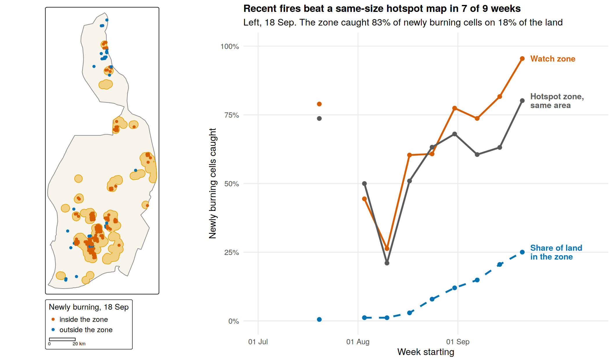
map_ex <- tm_shape(pp_sf) +
tm_polygons(fill = col_land, col = "grey50") +
tm_shape(ex_zone) +
tm_polygons(fill = col_band, fill_alpha = 0.45, col = col_band) +
tm_shape(ex_new) +
tm_dots(fill = "where", size = 0.3,
fill.scale = tm_scale_categorical(values = c("inside the zone" = col_fire,
"outside the zone" = col_accent)),
fill.legend = tm_legend(title = "Newly burning, 18 Sep", text.size = 1, title.size = 1.1,
position = tm_pos_out("center", "bottom"))) +
tm_scalebar(position = tm_pos_out("center", "bottom"), breaks = c(0, 20))
watch_lab <- watch_week %>%
filter(!is.na(share)) %>%
group_by(measure) %>%
slice_max(week, n = 1) %>%
ungroup() %>%
mutate(label = c("Watch zone", "Hotspot zone,\nsame area", "Share of land\nin the zone")[as.integer(measure)])
chart <- ggplot(watch_week, aes(week, share, colour = measure, linetype = measure)) +
geom_line(linewidth = 1.1, na.rm = TRUE) +
geom_point(size = 2.2, na.rm = TRUE) +
geom_text(data = watch_lab, aes(label = label), hjust = 0, nudge_x = 2.5,
size = 3.7, lineheight = 0.9, fontface = "bold") +
scale_colour_manual(values = c(col_fire, "grey35", col_accent), guide = "none") +
scale_linetype_manual(values = c("solid", "solid", "dashed"), guide = "none") +
scale_y_continuous(labels = scales::percent, limits = c(0, 1)) +
scale_x_date(date_labels = "%d %b", breaks = as_date(c("2026-07-01", "2026-08-01", "2026-09-01")),
expand = expansion(mult = c(0.03, 0.28))) +
labs(title = paste0("Recent fires beat a same-size hotspot map in ", wk_won, " of ", nrow(wk_cmp), " weeks"),
subtitle = paste0("Left, 18 Sep. The zone caught ", round(100 * ex_catch), "% of newly burning cells on ",
round(100 * ex_land), "% of the land"),
x = "Week starting", y = "Newly burning cells caught") +
theme_minimal(base_size = 12) +
theme(plot.title = element_text(face = "bold", size = 13),
panel.grid.minor = element_blank())
grid::grid.newpage()
grid::pushViewport(grid::viewport(layout = grid::grid.layout(1, 9)))
print(map_ex, vp = grid::viewport(layout.pos.row = 1, layout.pos.col = 1:3))
print(chart, vp = grid::viewport(layout.pos.row = 1, layout.pos.col = 4:9))On the same amount of land, recent fires found more new fires than the hotspot map. The watch zone caught 76 percent of newly burning cells on 15 percent of the land. Hotspot zones caught 64, 58 and 50 percent at 1.5, 3 and 6 km.
The gap to the best hotspot zone is 12 points (95 percent interval 3.6 to 16.3). The watch zone did better on 23 days and worse on 6 (sign test p = 0.0023), and for separate new fires it caught 29 percent against 22. It did slightly worse in the weeks of 3 August and 24 August. Its settings came from this season, so it needs testing on another year.
Conclusion
Very little burned in Pulang Pisau before late August 2026. Fire-days then rose to a peak in the last week of the record, with the densest burning in the south-central peat, and almost half were a cell burning again within a week. The fires were strongly clustered, but a map alone cannot show why, and access by road and canal explains little of it. Adding time gives a clearer answer. Fires under 3 km apart burned 1 to 3 days apart more often than random dates give, for both satellites. A daily watch zone built on this found more new fires than a hotspot map of the same size. The density maps can guide where crews are based, and the watch zone could guide daily patrols once it has been tested on other years.
Future Work
- Test the watch zone on earlier seasons such as 2019 and 2023.
- Add peat depth and land cover to settle Q3.
- Rerun on standard processing data when it is released.
- Link fire-days to burned area and haze, to rank places by harm.
References
- Baddeley, A., Møller, J. and Waagepetersen, R. (2000). Non- and semi-parametric estimation of interaction in inhomogeneous point patterns. Statistica Neerlandica, 54(3), 329 to 350.
- Baddeley, A., Rubak, E. and Turner, R. (2015). Spatial Point Patterns: Methodology and Applications with R. Chapman and Hall/CRC.
- Berita Sampit (2026, 18 September). Karhutla Pulpis capai 3.693 hektare, kualitas udara berada pada level berbahaya. https://beritasampit.com/2026/09/18/karhutla-pulpis-capai-3-693-hektare-kualitas-udara-berada-pada-level-berbahaya/
- Davies, T. M., Marshall, J. C. and Hazelton, M. L. (2018). Tutorial on kernel estimation of continuous spatial and spatiotemporal relative risk. Statistics in Medicine, 37(7), 1191 to 1221.
- Diggle, P. J. (2013). Statistical Analysis of Spatial and Spatio-Temporal Point Patterns (3rd ed.). CRC Press.
- Diggle, P. J., Chetwynd, A. G., Häggkvist, R. and Morris, S. E. (1995). Second-order analysis of space-time clustering. Statistical Methods in Medical Research, 4(2), 124 to 136.
- Fernando, W. T. P. S. and Hazelton, M. L. (2014). Generalizing the spatial relative risk function. Spatial and Spatio-temporal Epidemiology, 8, 1 to 10.
- Giglio, L., Schroeder, W. and Justice, C. O. (2016). The collection 6 MODIS active fire detection algorithm and fire products. Remote Sensing of Environment, 178, 31 to 41.
- IQAir (2026). Wildfire map spotlight, Indonesia forest and peatland fires, September 2026. https://www.iqair.com/newsroom/wildfire-map-spotlight-indonesia-forest-and-peatland-fires-september-2026
- Kam, T. S. (2026). R for Geospatial Data Science and Analytics. https://r4gdsa.netlify.app/
- Knox, E. G. (1964). The detection of space-time interactions. Journal of the Royal Statistical Society, Series C, 13(1), 25 to 30.
- Page, S. E., Siegert, F., Rieley, J. O., Boehm, H.-D. V., Jaya, A. and Limin, S. (2002). The amount of carbon released from peat and forest fires in Indonesia during 1997. Nature, 420, 61 to 65.
- Page, S. E. and Hooijer, A. (2016). In the line of fire, the peatlands of Southeast Asia. Philosophical Transactions of the Royal Society B, 371, 20150176.
- Prokalteng (2026, 23 September). Bupati Pulang Pisau tinjau lokasi karhutla di Pandih Batu, soroti masalah sumber air. https://prokalteng.jawapos.com/pemerintahan/pemkab-pulang-pisau/23/09/2026/bupati-pulang-pisau-tinjau-lokasi-karhutla-di-pandih-batu-soroti-masalah-sumber-air/
- Schroeder, W., Oliva, P., Giglio, L. and Csiszar, I. A. (2014). The new VIIRS 375 m active fire detection data product. Remote Sensing of Environment, 143, 85 to 96.
- Townsley, M., Homel, R. and Chaseling, J. (2003). Infectious burglaries, a test of the near repeat hypothesis. British Journal of Criminology, 43(3), 615 to 633.
- WHO (2021). WHO Global Air Quality Guidelines. Particulate Matter (PM2.5 and PM10), Ozone, Nitrogen Dioxide, Sulfur Dioxide and Carbon Monoxide. World Health Organization, Geneva.
NoteAI use declaration
Generative AI was used to help write and debug the R code, check outputs against the text, and draft and edit the report, working under the author’s direction. The author chose the study area, reviewed every analytical step and result, and takes responsibility for the analysis and its conclusions.